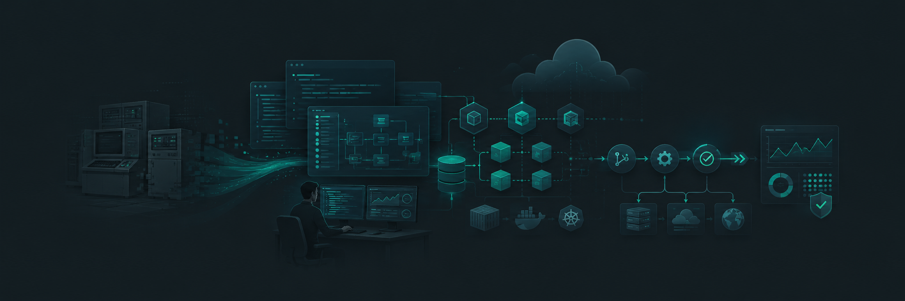
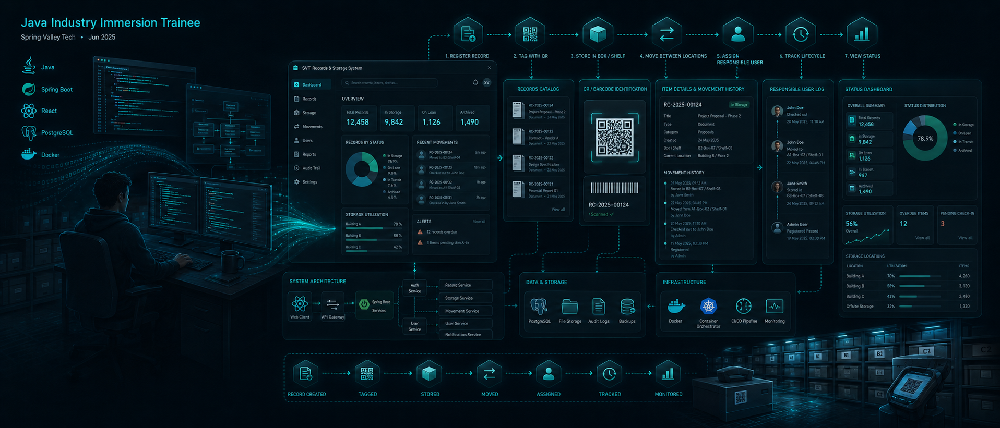
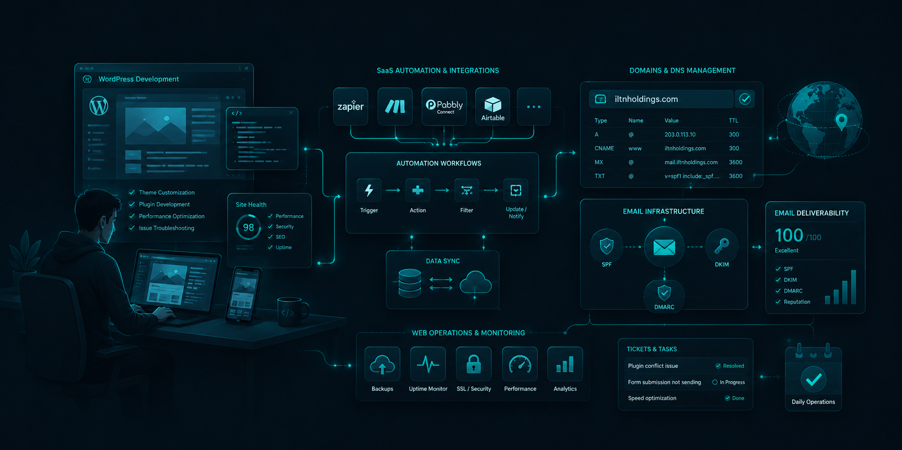
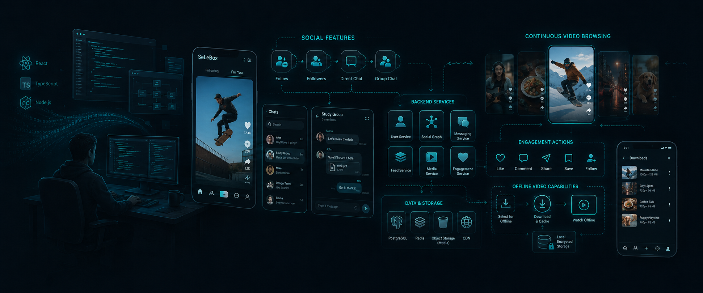
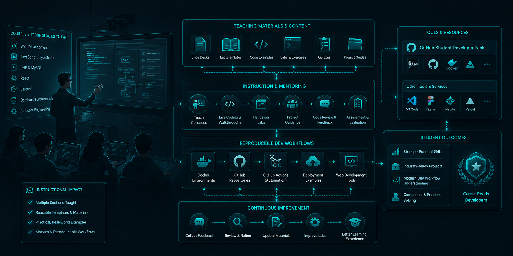
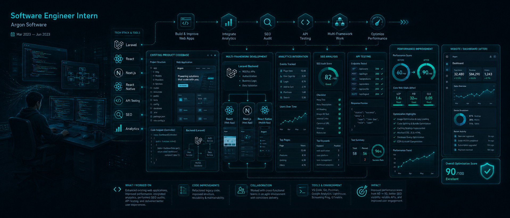

CAREER
EXPERIENCE
Roles where I built, maintained, taught, and improved software systems.
Professional timeline





Try Match Any or remove a filter.
CAREER
Roles where I built, maintained, taught, and improved software systems.






Try Match Any or remove a filter.